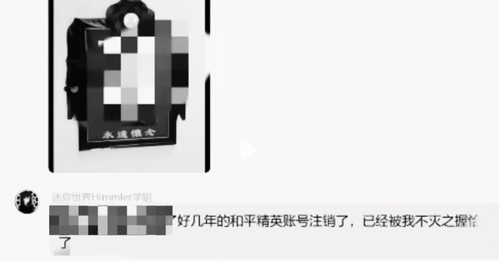
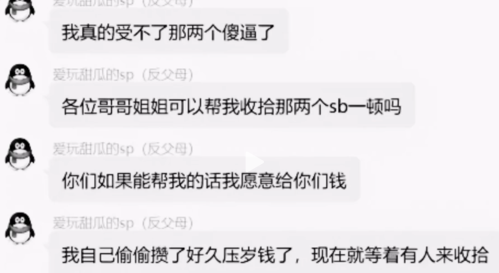
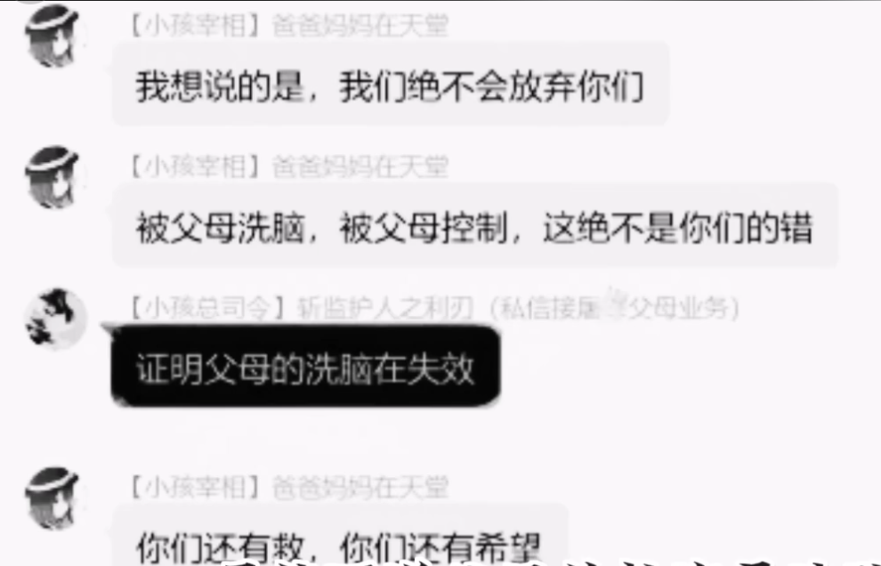
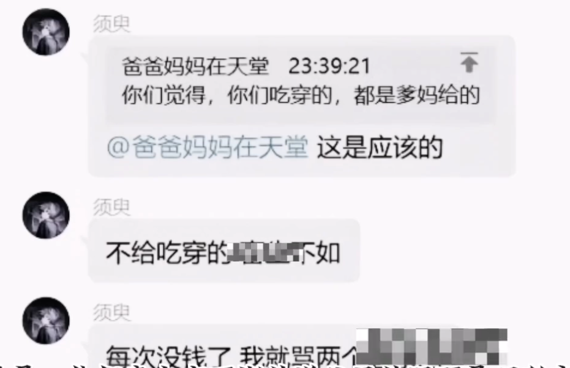

小孩帝国
更新历史
| 日期 | 版本 | 作者 | 更新内容 |
|---|---|---|---|
| 2025-03-13 | Shimada Mizuki | 修正笔误。 | |
| 2025-03-01 | Shimada Mizuki | 修正格式。 | |
| 2025-02-27 | Shimada Mizuki | 改进格式、修正错误。 | |
| 2025-02-26 | Shimada Mizuki | 补充。 | |
| 2025-02-22 | Shimada Mizuki | 补充内容。 | |
| 2025-02-20 | Shimada Mizuki | 创建页面，并写入最初内容。 |
注意：本页面所介绍之概念缺乏媒体素材支持。
此章节的参考来源已被封锁，内容无法查证。
小孩帝国，是黑化家族的10后实现（Implementation），是继短视频平台火爆以来第二个反抗中式教育的未成年人组织。网络上被挂起来的，一般是小孩帝国左派。
发展
由于中华文化中「孝」的思想观念使得子女往往处于弱势一方，自然成为了大多家长唯一可以「用且滥用」权力的对象，于是出现了「上一代奚落下一代，下一代奚落下下一代」1的局面，一代代的思想冲突积累最后都会由最低的辈分承担，矛盾往往就容易在这一辈中点燃。
在这样「越压迫越反抗，越反抗越压迫」的恶性循环中，长期以来的压抑情绪不断积累，直到在10后群体中爆发。
2024年，小孩帝国以QQ群的形式组建，最初的小孩帝国跟黑化家族本质上并无区别，都是未成年人间消遣发泄、互相「抱团取暖」的地方，只是媒介与形式有所不同。
随后有网络保守派混入其中，小孩帝国也分化为左右两派（也有人将相对温和的左派称为中派）。左派（激进派）认为「父母皆恶人」，主张反抗、诅咒、谋杀父母，极端者甚至将自己父母的照片P成黑白照；相对保守的中派则是辱骂父母、发表过激言论以发泄情绪，并无物理上的行为；形式温和（如碎碎念、报团取暖）的右派（温和派）。同年中旬，保守派将左派的极端个例制作成伪纪录片上传到视频平台，蔑称其为「小孩帝国」，带入大众视野。随后出现了诸如「没收手机就老实了」的戏谑评价。
class 小孩帝国左派(黑化家族):
def __init__(self, *args):
pass # 此处省略具体实现。
# 此处省略具体实现。
此类型伪纪录片发布者为了避免矛盾激化，或者使观点更易于让未成年人接受，便刻意提到「会出现这样的组织，背后一定有一个成年人张罗」，意图将矛头从未成年人身上移开，尽量减小逆火效应。
相关网络梗
- 分不清大小王（一般用在亲子或情侣间，指下级向上级提建议，如孩子对父母提意见，这被网络保守派认为是倒反天罡）；
- 倒反天罡（常被用于批判反抗原生家庭/向长辈提意见的人）。
画廊
小孩帝国左派


小孩帝国中派


参见
来自B站@三华李LONGER的视频《当你的童年变成了一门生意，你的童年就已经死了【查理九世】》，若无法播放，查看存档或播放该视频。[引用日期2025-02-22，存档日期2025-03-01]↩